TECHVESTVENTURES DAILY RISK ALERTS — Emergent News Digest — Nov 12, 2026, 9:00 AM EST ALL RISK REPORTS click TVV Risk Center
TVV RESEARCH DIGEST — November 12, 2026 — 12 desks
1. Major Geopolitical Conflict Developments
- ★ Putin received Steve Witkoff and Jared Kushner at the Kremlin on Thursday afternoon Moscow time, with aides Yuri Ushakov and Vladimir Medinsky and fund chief Kirill Dmitriev at the table. Kushner says the envoys carry proposals "aligned" with Ukraine and European partners but admits "significant differences remain"; territory in the east, security guarantees, NATO and the size of Ukraine's army are still unresolved. The envoys fly on to Dublin to brief Zelenskyy. Russia restricted flights at Moscow's Zhukovsky and Domodedovo airports and four regional airports as the envoys landed. Kremlin · AP · ABC News
- ★ Prisoner swap detail: Russian Lt. Gen. Alexander Zorin, via TASS, says the agreed exchange will be the largest ever, with more than 1,000 people per side, and should happen within two to three weeks; Kyiv has not confirmed the number. The war went on around the talks: Russia hit six major power substations, a strike on a crowded market in Odesa Oblast killed at least four people, and Ukrainian drones reportedly targeted Russia's largest oil refinery and a Baltic Sea port. Kyiv Independent · Al Jazeera
- ★ Odds: battlefield bets frame the leverage Moscow brings to the table. Polymarket prices Russia taking Bilytske by Dec 31 at 85% and an energy-infrastructure ceasefire by Dec 31 at 29.5% (see graph). Near-term implication: traders expect Russian advances to continue through year-end even if talks proceed. Polymarket
- ★ Hormuz (conflicting claims, screen skeptically): Iran's Revolutionary Guards Navy says two supertankers were disabled by "massive explosions" on Wednesday night after using an "unauthorized" southern route, and state media says they hit naval mines and aired video. The IRGC named no ships and gave no crew status; reports differ on whether the 4 million barrels were combined or per ship. TradeWinds counts about 50 ships hit in 45 days. Separately, Reuters sources say Iran attacked ship-navigation systems on Oman's Didamar island in the strait; damage is unclear, and shipping sources expect limited impact because other navigation aids remain. Parliament Speaker Ghalibaf says Washington has not formally answered Tehran's seven conditions. Oman Observer / Reuters · Iran International · Straits Times / Reuters · TradeWinds · Moneycontrol
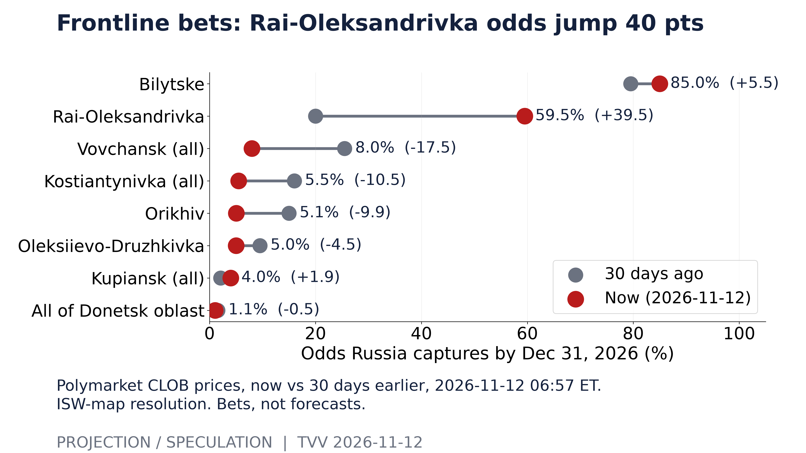
Frontline bets: Rai-Oleksandrivka odds jump 40 pts. Polymarket CLOB prices, now vs 30 days earlier, 2026-11-12 06:57 ET. ISW-map resolution. Bets, not forecasts. [Projection/Speculation; data as of 2026-11-12 06:57 ET] Source: polymarket.com data page
2. Major Terror / Security Incidents
- ★ Pakistan: militants ambushed police vehicles in Kohat, Khyber Pakhtunkhwa, on Wednesday as officers returned from an operation against illegal gold mining, setting off a gunbattle that killed at least 10 officers and 18 militants, officials said. AP
- ★ Bangladesh update: police now count 60 crude-bomb blasts and 22 vehicle arson attacks in four days, with 62 arrests. Attacks spread to a train carriage and to districts including Pabna and Netrokona, ahead of Sheikh Hasina's planned return. Dhaka Tribune · The Daily Star
- ★ Spain: a backpack bomb left at a shooting scene in Oviedo exploded as police moved it on Tuesday, killing a police sub-inspector and his dog and maiming a bomb-disposal officer. More than 100 officers were still hunting the 64- or 65-year-old suspect on Wednesday, and police warn a second device cannot be ruled out. No terrorist motive has been reported. Newsline Post / Europa Press
- ★ Cyber: Maersk confirmed data was taken from a legacy logistics system inherited through an acquisition; the WhiteArmor ransomware group claims 100 GB and demands $5 million, and Maersk says operations and bookings are unaffected. The Storm ransomware crew claims five US banks and a credit union, two of which confirm breaches, and a gang claims more than one million Social Security numbers from Vanderbilt University. CISA's exploited-flaw list added 114 entries in the last 90 days versus 73 in the prior 90, with Microsoft the top vendor (see graph). Maersk · BleepingComputer · American Banker · Inside Higher Ed · CISA KEV
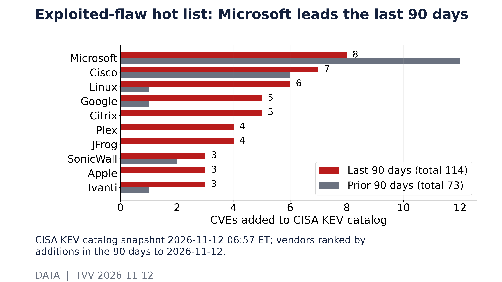
Exploited-flaw hot list: Microsoft leads the last 90 days. CISA KEV catalog snapshot 2026-11-12 06:57 ET; vendors ranked by additions in the 90 days to 2026-11-12. [Data; data as of 2026-11-12 06:57 ET] Source: cisa.gov data page
3. Earthquakes and Eruptions
- ★ No new M6.0+ quake with significant casualties or damage since the last issue; Wednesday's strongest was an M5.1 in the remote Balleny Islands region. Context: USGS counts an average of 38.9 M5+ quakes a week over the past 12 months, with nine weeks above the normal statistical band, mostly aftershock clusters (see graph). Earthwatch247 · USGS
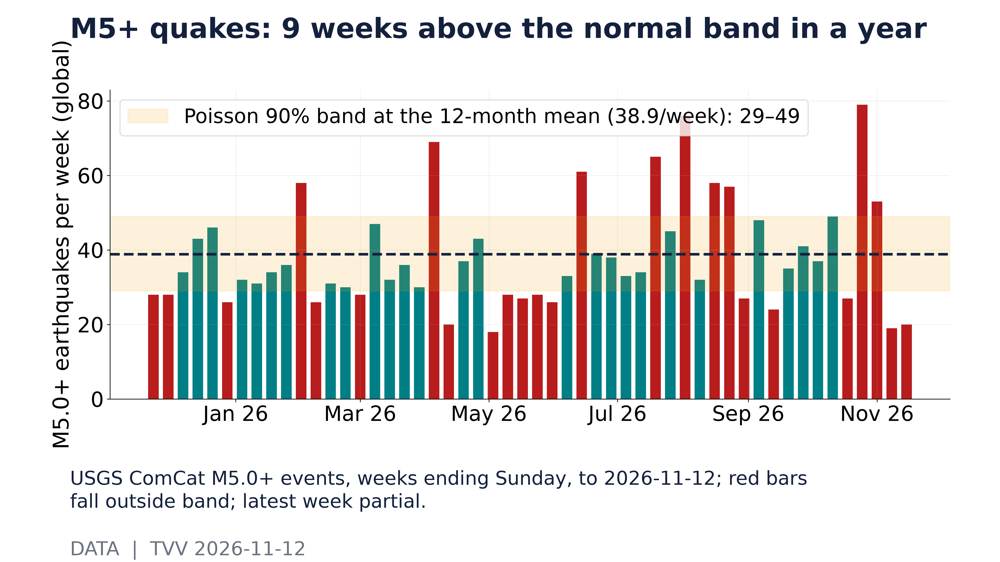
M5+ quakes: 9 weeks above the normal band in a year. USGS ComCat M5.0+ events, weeks ending Sunday, to 2026-11-12; red bars fall outside band; latest week partial. [Data; data as of 2026-11-12] Source: earthquake.usgs.gov data page
4. Solar / Space Weather
- ★ Quiet now, storms flagged ahead: NOAA's 3-day forecast tops out at Kp 1.67 through Nov 14 with no storms expected, and an R1 radio blackout occurred Wednesday. NOAA's 27-day outlook marks G1 (Kp 5) storm days on Nov 17–18, Nov 27–28 and Dec 4–5 from a recurring coronal-hole pattern (see graph); implication: minor-storm risk returns early next week, though 27-day outlooks have low skill. NOAA SWPC 3-day forecast · NOAA SWPC 27-day outlook
- ★ Long-horizon watch: magnetic north keeps drifting toward Siberia in NOAA's measured and modeled data, but no one can predict the timing of a sudden geomagnetic shift. Michael Hentschel's own view: 2035 at the earliest, with critical earth changes along the way. Next weekly globe: Nov 15. NOAA NCEI
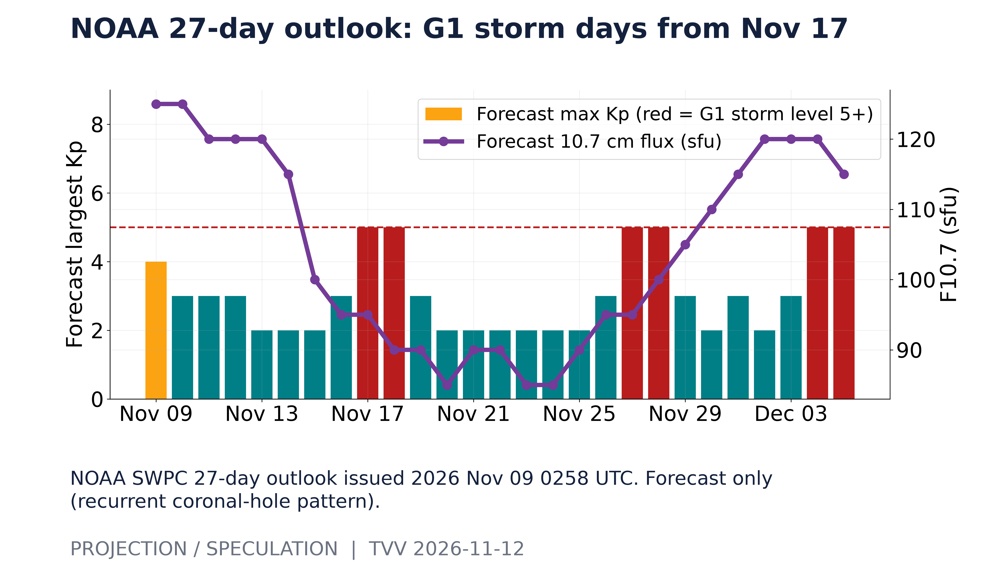
NOAA 27-day outlook: G1 storm days from Nov 17. NOAA SWPC 27-day outlook issued 2026 Nov 09 0258 UTC. Forecast only (recurrent coronal-hole pattern). [Projection/Speculation; data as of 2026 Nov 09 0258 UTC] Source: services.swpc.noaa.gov data page
5. Critical Infrastructure / Transportation Disruptions
- ★ Texas grid: ERCOT CEO Pablo Vegas will ask lawmakers for power to make data centers cut usage at the first level of a grid emergency, or earlier, instead of waiting for level two, to protect homes and ordinary businesses in a shortage. ERCOT has not yet ordered any data center to curtail under the 2025 law, and Texas already froze new data center grid connections in August. Quartz / Bloomberg
- ★ Debt behind the build-out: the long-term debt of Oracle, Meta, Alphabet, Microsoft, Amazon and CoreWeave reached about $545 billion at Q3 2026, 2.7 times the 2023 level, with Alphabet at $125 billion, Oracle $118 billion and Meta $81 billion; leases and off-balance-sheet financing are excluded (see graph). SEC EDGAR
- ★ Failover failures: a Frankfurt cloud provider lost one of two power feeds on Wednesday morning and some systems failed to switch over, needing manual recovery for about eight hours. Ukraine's grid took another six substation hits (see GEO). IsDown / LUMASERV · Kyiv Independent
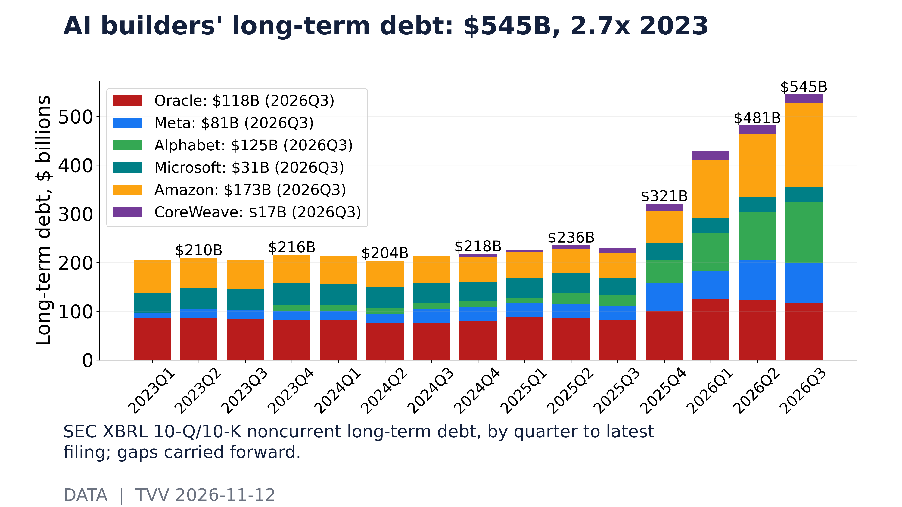
AI builders' long-term debt: $545B, 2.7x 2023. SEC XBRL 10-Q/10-K noncurrent long-term debt, by quarter to latest filing; gaps carried forward. [Data; data as of 2026Q3] Source: data.sec.gov data page
6. Econo-Metrics
- ★ Bond market reopens after Veterans Day: the 10-year yield rose to 5.01%, the 2-year to 4.78% and the 30-year held near 5.35% early Thursday. Treasury sells $25 billion of 30-year bonds at 1 p.m.; the October sale cleared at 5.618%. Odds: Polymarket gives 50% that the 30-year yield retests 5.50% before 2027 and 30% for 5.60% (see graph), so a weak auction would push toward those levels. October PPI comes Friday, expected at +0.4% after September's 1.3% jump. CNBC · Capital Finance Bureau · Polymarket
- ★ Jobless claims for the week to Nov 7 are due at 8:30 a.m. The last reading showed 189,000 initial claims and 1.718 million continuing claims, both below the same week of 2025 (see second graph): layoffs stay low while rehiring stays slow. The dollar index hit a 19-month high of about 103 as markets price a December hike as certain (about 87% for 25 basis points, 13% for 50). US Department of Labor · Centrino Capital
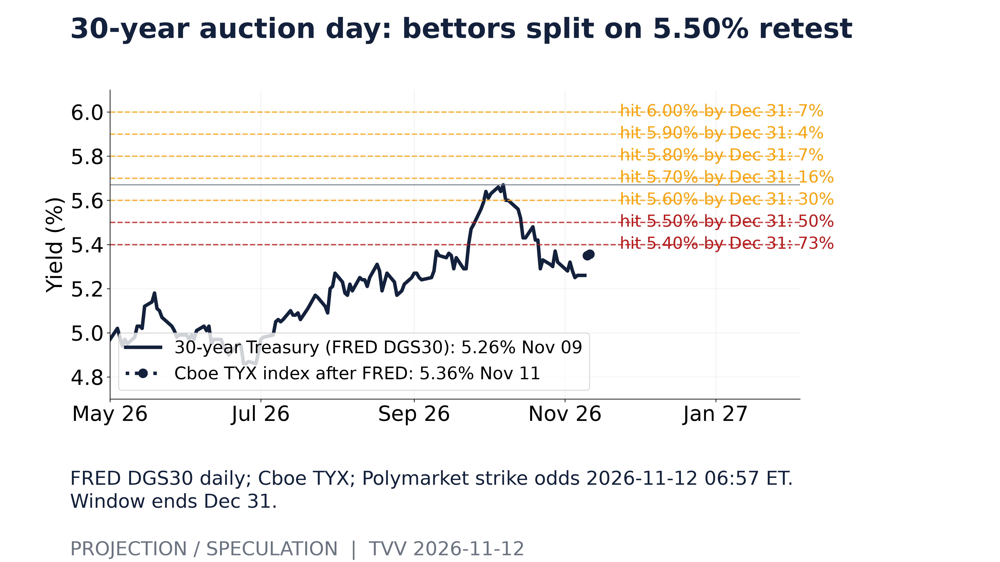
30-year auction day: bettors split on 5.50% retest. FRED DGS30 daily; Cboe TYX; Polymarket strike odds 2026-11-12 06:57 ET. Window ends Dec 31. [Projection/Speculation; data as of 2026-11-12 06:57 ET] Source: polymarket.com data page
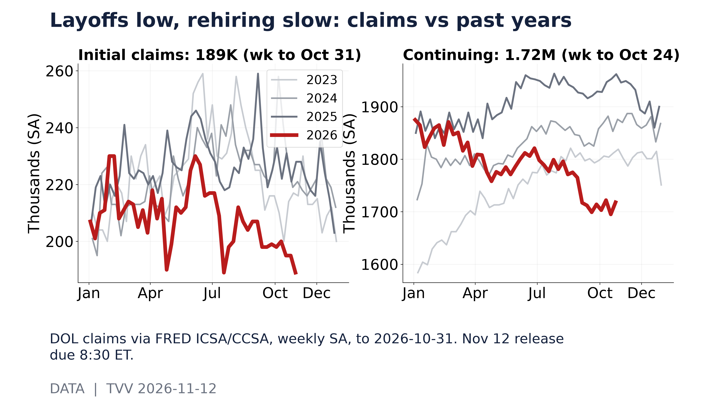
Layoffs low, rehiring slow: claims vs past years. DOL claims via FRED ICSA/CCSA, weekly SA, to 2026-10-31. Nov 12 release due 8:30 ET. [Data; data as of 2026-10-31] Source: fred.stlouisfed.org data page
7. Epidemic / Bio-Metrics
- ★ Ebola, DR Congo: WHO's Director-General briefed member states Wednesday as cases passed 11,000 (11,042) with 5,387 deaths across eight provinces. Ituri is the most affected province, new hotspots keep emerging, and attacks on health workers and loss of contact tracing are hampering the response. WHO · Al Jazeera · ECDC
- ★ US flu season is arriving early: test positivity reached 9.1% in the week to Oct 31, up from 4.8% three weeks earlier and against 1.1% at the same week last season. Projection: at the recent pace positivity doubles about every 22 days, which would put it well above 15% by Thanksgiving (see graph); early-season trends often bend, so this is a straight extrapolation, not a forecast. CDC FluView
- ★ COVID watch: China CDC's latest report says PQ.16.1.1 and its sublineages dominate and finds no new variant posing added public-health risk; SV.2.4, a PQ.16.1.1 descendant, is not separately flagged, so official data still do not confirm a China surge. China CDC
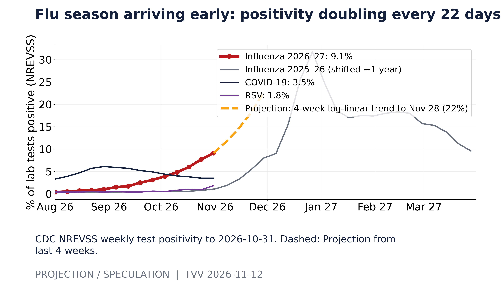
Flu season arriving early: positivity doubling every 22 days. CDC NREVSS weekly test positivity to 2026-10-31. Dashed: Projection from last 4 weeks. [Projection/Speculation; data as of 2026-10-31] Source: data.cdc.gov data page
8. Gold and Silver and Commodities
- ★ Gold slipped below $4,000 to about $3,980 (a one-week low) and silver to about $51.5 as the dollar index hit a 19-month high on hike bets. Brent: data conflict, as CNBC/Reuters had it down $1.14 to $91.62 early Thursday on peace-talk hopes and a reported 9-million-barrel US crude build, while a later CNBC check showed Brent at $92.92 and WTI at $86.59; official EIA inventory data is due Thursday. Centrino Capital · CNBC · CNBC
- ★ Odds: Polymarket gives gold a 49.5% chance of touching $4,500 by Dec 31 and 12% of falling to $3,500, while gold sits about 26% below its January record close of $5,318 (see graph). Implication: bettors see upside and downside as roughly balanced, with rate-hike pricing the main weight. Polymarket
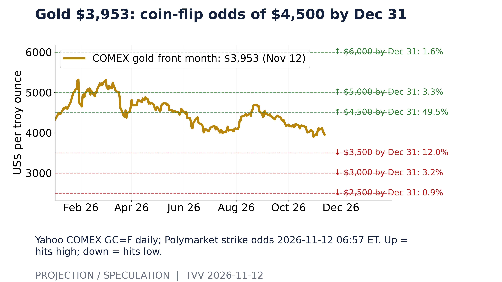
Gold $3,953: coin-flip odds of $4,500 by Dec 31. Yahoo COMEX GC=F daily; Polymarket strike odds 2026-11-12 06:57 ET. Up = hits high; down = hits low. [Projection/Speculation; data as of 2026-11-12 06:57 ET] Source: polymarket.com data page
9. Stock Averages and Nasdaq Major Movers
- ★ Wednesday: the S&P 500 rose 1.31% to 7,619.38, the Nasdaq 1.60% to 25,466.19 and the Dow 0.49% to 52,486.49 as AI stocks rebounded; CoreWeave jumped 24%, and the S&P closed 2.6% below its record. Then, after the bell, reports that Nvidia's board met to consider ousting Jensen Huang sent Nvidia down more than 8% after hours. At about 7 a.m. Thursday, S&P futures were down about 0.4% and Nasdaq futures 0.8–0.9%, while Dow futures were roughly flat. AP · Yahoo Finance · Yahoo Finance
- ★ Credit is starting to notice: the high-yield bond spread was 3.34% on Nov 9, within a 2025–26 range of 2.59–4.61%, and the VIX closed at 17.5; the two have moved together over the past 60 days with a +0.65 correlation (see graph). Implication: if Nvidia's turmoil lifts the VIX again, junk spreads are likely to widen with it. FRED · Centrino Capital
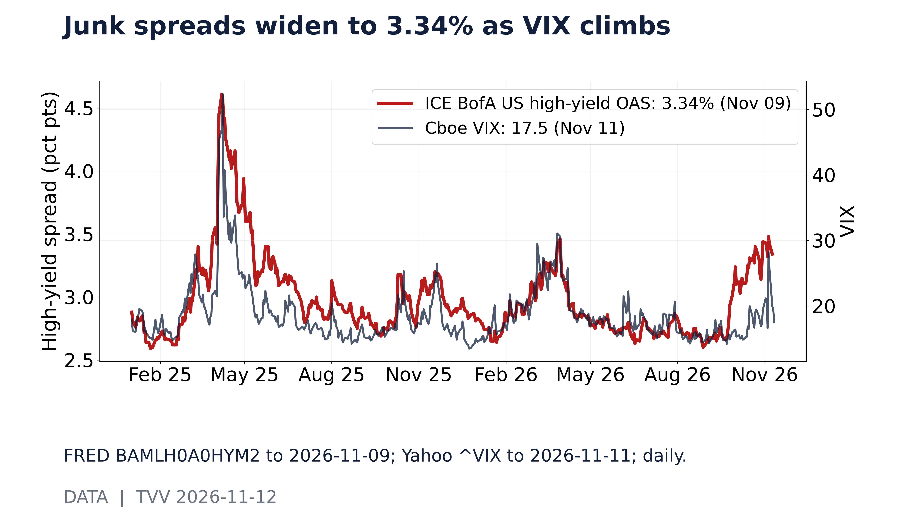
Junk spreads widen to 3.34% as VIX climbs. FRED BAMLH0A0HYM2 to 2026-11-09; Yahoo ^VIX to 2026-11-11; daily. [Data; data as of 2026-11-09] Source: fred.stlouisfed.org data page
10. Polymarket and Kalshi Sentiment Highlights
- ★ Odds on Huang: Polymarket prices an announced resignation or removal of Jensen Huang by Nov 13 at 50%, by Nov 30 at 70% and by Dec 31 at 77.5%; about $5.2 million has traded on the year-end market. Bettors now treat a change at the top of the world's most valuable chipmaker as more likely than not. Polymarket
- ★ Bitcoin: Polymarket odds that Bitcoin trades below $70,000 before 2027 rose from 33.5% sixty days ago to 71.5% now, with 21.5% for below $60,000 and 4.5% for above $100,000 (see graph). Bitcoin was near $73,500 Thursday after five straight days of US spot ETF outflows totaling about $1.4 billion. Polymarket · CoinDesk
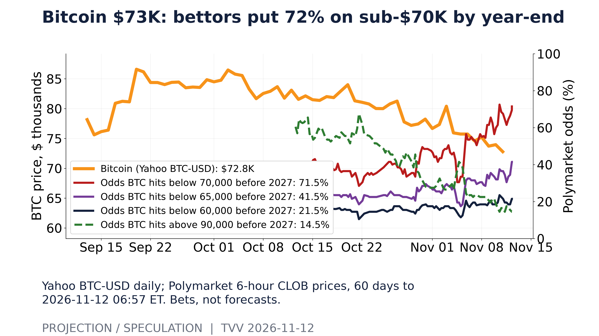
Bitcoin $73K: bettors put 72% on sub-$70K by year-end. Yahoo BTC-USD daily; Polymarket 6-hour CLOB prices, 60 days to 2026-11-12 06:57 ET. Bets, not forecasts. [Projection/Speculation; data as of 2026-11-12 06:57 ET] Source: polymarket.com data page
11. Tech-Metrics
- ★ Nvidia leadership crisis: CNBC confirms the board met Wednesday to discuss removing Jensen Huang after The New York Times reported a second extramarital relationship, with Kimberly Powell, an Nvidia vice president who reports to him; Huang had admitted on Sunday to an affair with a Megaspeed executive whom US officials believe is a Chinese spy. Shares fell 8.1% premarket, while AMD rose 3.9% and Broadcom 3%. Bernstein halved its price target to $200, some analysts warn removal could cost another 20%, and US lawmakers have called for his resignation. Nvidia has no named successor. CNBC · TechCrunch
- ★ Earnings tonight: Applied Materials is expected to report about $4.06 a share on $10.3 billion of revenue, and Cisco about $1.33 on $18.13 billion. Nvidia reports Nov 17. Since their 2026 closing highs, Applied Materials is down 45%, Nvidia 27%, Cisco 22.5% and the chip ETF SMH 24% (see graph). Investing.com · Benzinga
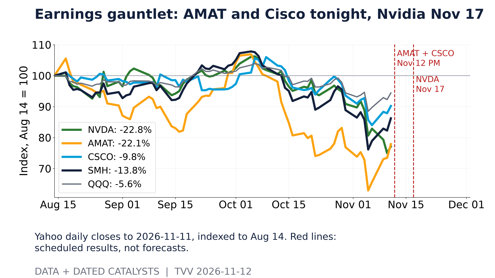
Earnings gauntlet: AMAT and Cisco tonight, Nvidia Nov 17. Yahoo daily closes to 2026-11-11, indexed to Aug 14. Red lines: scheduled results, not forecasts. [Data + dated catalysts; data as of 2026-11-11] Source: query1.finance.yahoo.com data page
12. AI Hypergrowth Risks
- ★ Valuation concentration: Anthropic set its IPO range at $70–78 a share, an implied valuation of up to about $1.4 trillion, selling 825 million shares on Nasdaq under "ANT." Odds: Polymarket puts 46% on an OpenAI IPO closing above $1.2 trillion and 22% on above $1.8 trillion (see graph). Implication: two private AI labs are being priced near the size of the largest listed tech companies, while Nvidia's leadership turmoil shows how much rides on single individuals. TechCrunch · SEC · Polymarket
- ★ Dependency failure: OpenAI users could not start new Workspace Agent runs for about 9 hours 45 minutes, from 5:50 p.m. ET Wednesday to 3:32 a.m. Thursday, and OpenAI disclosed no root cause. Businesses that hand workflows to agents lose them entirely during such outages. OpenAI Status
- ★ AI successes: Google DeepMind released AlphaGenome 2, which predicts how DNA variants change gene activity across hundreds of human cell types to help trace disease causes, and University of Manchester researchers used generative AI to design enzymes for making lenacapavir, an HIV-prevention drug. Google DeepMind · University of Manchester
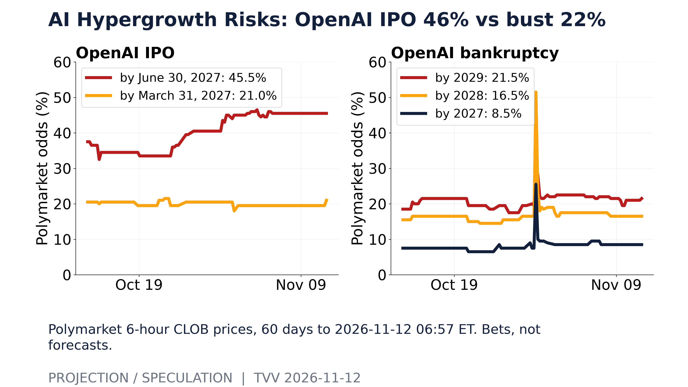
AI Hypergrowth Risks: OpenAI IPO 46% vs bust 22%. Polymarket 6-hour CLOB prices, 60 days to 2026-11-12 06:57 ET. Bets, not forecasts. [Projection/Speculation; data as of 2026-11-12 06:57 ET] Source: polymarket.com data page
Action Alert Prioritized Risk Summary November 12, 2026
| Sections | |
|---|---|
| GEOPOL | Putin hosts US envoys; land gaps remain as Russia keeps hitting Ukraine's grid. |
| HEALTH | Congo Ebola passes 11,000 cases and 5,387 deaths; attacks on health workers spread. |
| ECONOMY | 10-year Treasury yield tops 5% on December hike bets, raising borrowing costs everywhere. |
| TERROR | Kohat ambush kills 10 Pakistani police; Bangladesh counts 60 bomb blasts in four days. |
| AI | Anthropic's IPO at up to $1.4 trillion deepens dependence on a few AI labs. |
| TECH | Nvidia's board weighs removing Jensen Huang over a second reported affair; shares fall 8%. |
| ODDS | Bettors: Huang exit 50% by Friday; Bitcoin below $70,000 at 72% by 2027. |
| INFRA | Texas grid seeks power to cut data-center use earlier in emergencies to protect homes. |
| STOCKS | Junk-bond spreads at 3.34% track a rising VIX; Nvidia turmoil could widen them. |
| METALS | Gold slips below $4,000 as the dollar hits a 19-month high; Brent near $92. |
| SPACE | Quiet sun now; NOAA flags minor G1 storm days Nov 17-18, Nov 27-28 and Dec 4-5. |
| QUAKES | No major quake; M5+ counts above normal nine weeks this year, mostly aftershocks. |
TECHVESTVENTURES ACTION-ALERT — November 12, 2026 see all graphs click TVV Risk Center
EDITOR — Michael Hentschel
Most news events require or spawn no action or reaction, some (but not many) are or become warnings. We draw attention to substantial lifestyle risks and market risks in particular, some created by Mid-Term Vote anxieties, Middle East tensions, vast over-indebtedness globally, and other events we track. Longer term but capable of causing sudden power surges as serious as the Carrington Event. Climate instability occasioned by long-term cyclical solar electro-magnetic flares, is becoming much more prominent and even more likely. New AI predictive analytics and pattern seekers are pointed in some of these directions, and we monitor imminent likelihood. Some readers might hedge and others might see opportunity. The above is not investment advice.